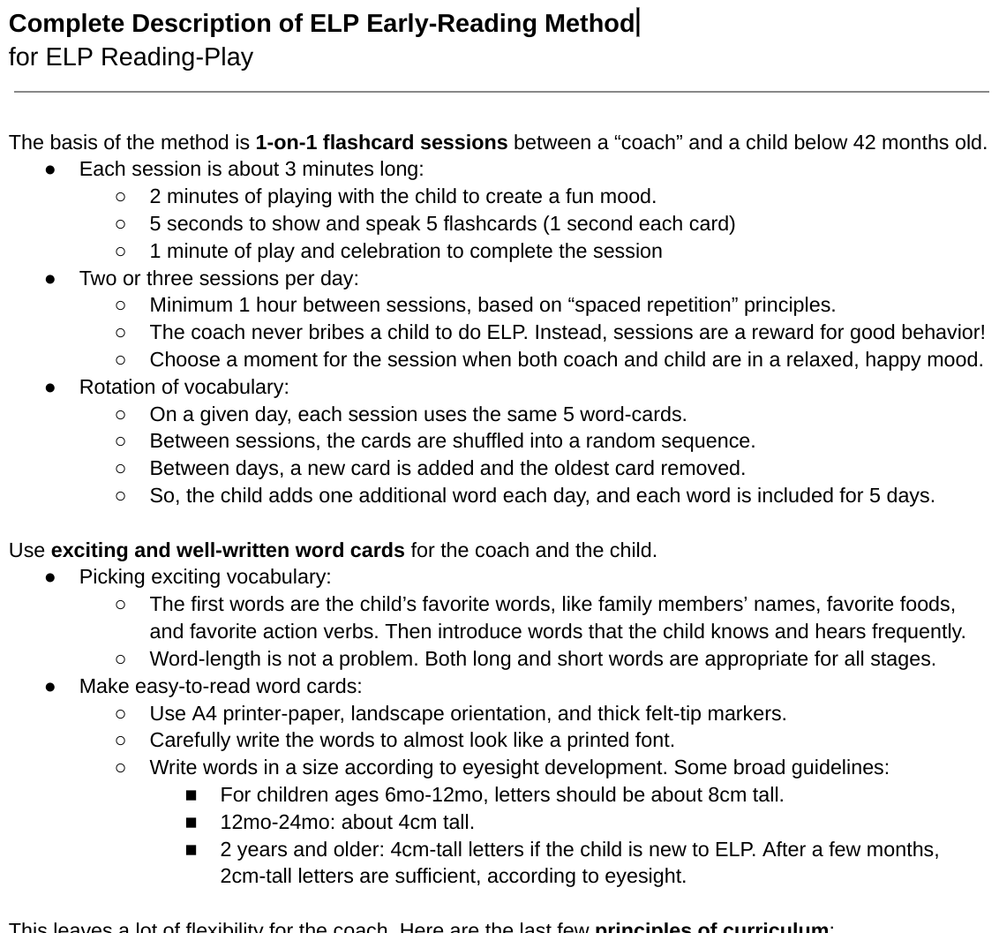

|  | 
|
ELP videos | Complete description of method in 1 page | Early-reading home videos from around the world |
Complete Description
of ELP Reading-Play Method
The basis of the method is 1-on-1 flashcard sessions between a “coach” and a child below 42 months old.
- Each session is about 3 minutes long:
- 2 minutes of playing with the child to create a fun mood.
- 5 seconds to show and speak 5 flashcards (1 second each card)
- 1 minute of play and celebration to complete the session
- Two or three sessions per day:
- Minimum 1 hour between sessions, based on “spaced repetition” principles.
- The coach never bribes a child to do ELP. Instead, sessions are a reward for good behavior!
- Choose a moment for the session when both coach and child are in a relaxed, happy mood.
- On a given day, each session uses the same 5 word-cards.
- Between sessions, the cards are shuffled into a random sequence.
- Between days, a new card is added and the oldest card removed.
- So, the child adds one additional word each day, and each word is included for 5 days.
Use exciting and well-written word cards for the coach and the child.
- Picking exciting vocabulary:
- The first words are the child’s favorite words, like family members’ names, favorite foods, and favorite action verbs. Then introduce words that the child knows and hears frequently.
- Word-length is not a problem. Both long and short words are appropriate for all stages.
- Make easy-to-read word cards:
- Use A4 printer-paper, landscape orientation, and thick felt-tip markers.
- Carefully write the words to almost look like a printed font.
- Write words in a size according to eyesight development. Some broad guidelines:
- For children ages 6mo-12mo, letters should be about 8cm tall.
- 12mo-24mo: about 4cm tall.
- 2 years and older: 4cm-tall letters if the child is new to ELP. After a few months, 2cm-tall letters are sufficient, according to eyesight.
This leaves a lot of flexibility for the coach. Here are the last few principles of curriculum:
- Three stages of ELP: introductory, experienced, and graduated.
- Single-word cards are the introductory stage of a child in ELP.
- After 50 to 100 words (about 4 months into the program), two-word flashcards are used.
- Examples of two-word cards: “big smile”, “spicy egg”, “running fast”.
- Now the child is in the experienced stage.
- After 50 to 100 two-word cards, (~8 months in), use whole-sentence cards.
- 12 months in, the child may be reading simple books independently.
- Once they are reading books independently for fun, they have graduated from ELP.
- It is necessary that this method is performed in Kinyarwanda (mother-tongue)!
- A nursery school may conduct most of their program in English or French, except for ELP sessions and other reading-time with Kinyarwanda materials.
- After the child “graduates” from ELP, they have an advantage in learning a second language.
Golden Rule: If it doesn’t feel fun for everyone, stop!
- Change to a different activity and try again after a half hour or so.